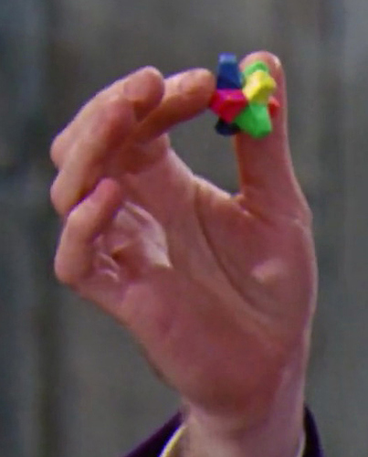

Imagine a candy that doesn't just melt on your tongue; it dances, it sings, and it tells tales of flavors that linger and waltz through your senses. Each Gobstopper, a tiny work of art, is a moment frozen in time, a burst of joy that defies the laws of ordinary sweets.
Ingredients:
- Sugar of the Sweetest Kind (about 2 cups)
- Colors of the Rainbow
- Edible Glitter (Optional)
- Essence of Mystery
- Imagination (Unlimited)
Instructions
- In a large cauldron (or mixing bowl), combine the sugar of the sweetest kind with the essence of mystery. Stir it with a wand or a large spoon.
- Carefully add the colors of the rainbow. Adjust the hues until they are vibrant and enchanting. For that extra magical touch, sprinkle in some edible glitter.
- Close your eyes and think of the most delightful, everlasting flavors. Channel your inner creativity and infuse the mixture with unlimited imagination.
- With the hands of a candy artisan, shape the concoction into bite-sized orbs. These are your Everlasting Gobstoppers.
- Allow the Gobstoppers to rest in a place filled with wonder and enchantment. The longer they rest, the more everlasting they become.
- Invite friends and family to experience the everlasting magic. Hand out your Gobstoppers and let the joy unfold.